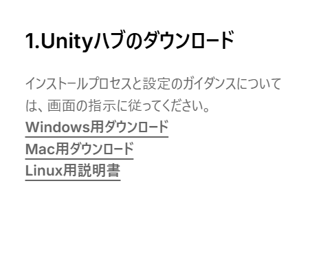
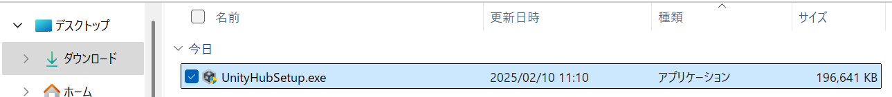
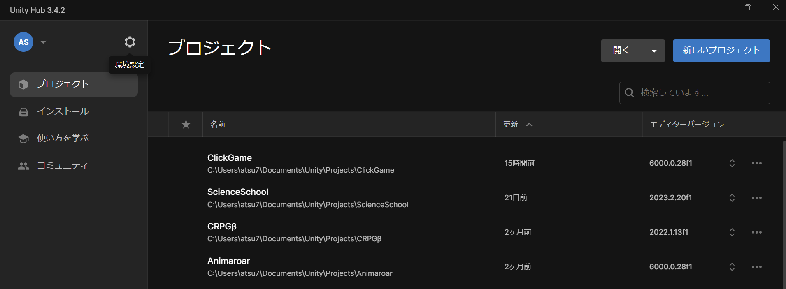
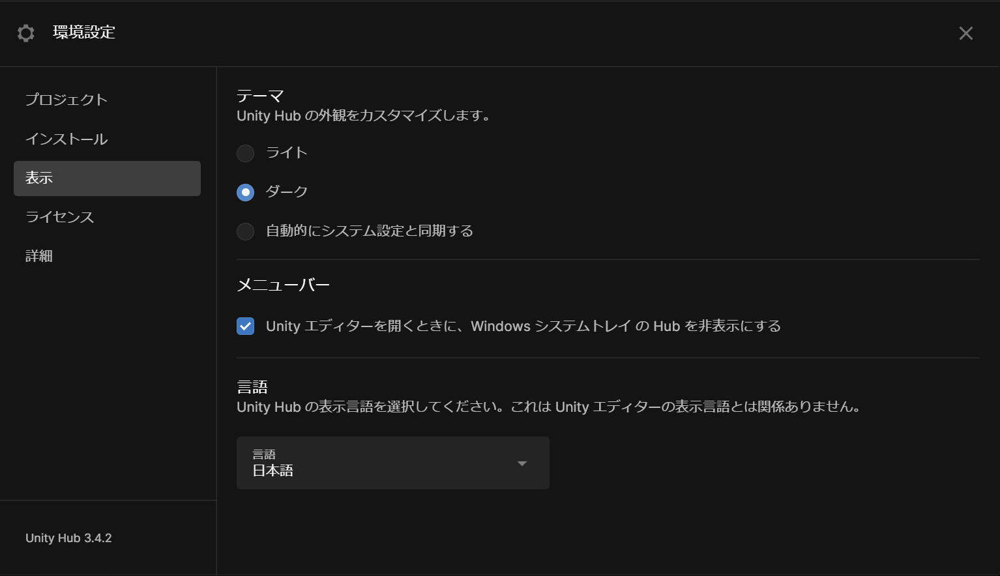
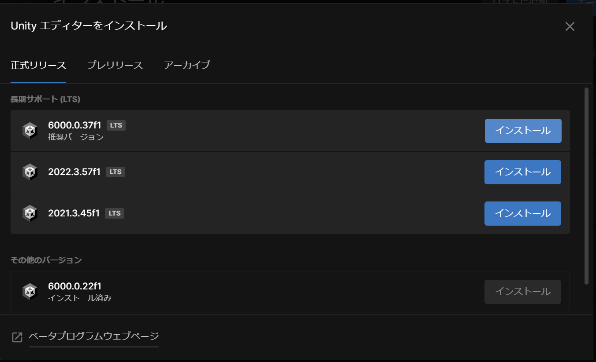
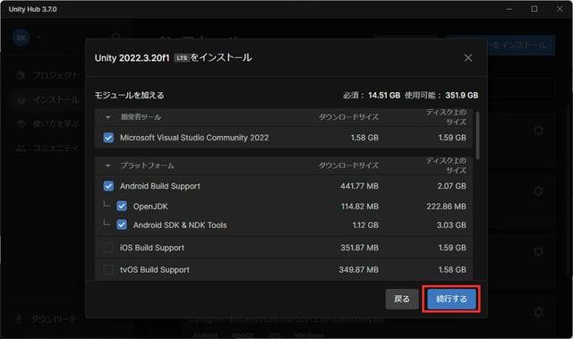
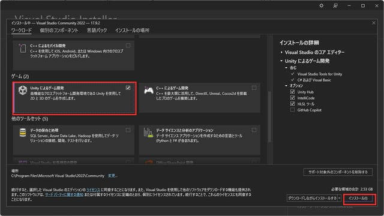

Unity環境構築ガイド
1. Unity Hubのインストール
Unity開発を始めるための最初のステップです。
- Unity公式サイトからUnity Hubをダウンロード（Unityダウンロードページにアクセスし、下図のWindows用Unity Hubをダウンロード）
- ダウンロードしたインストーラーを実行
- 画面の指示に従ってインストールを完了

Unity Hubのダウンロードボタンをクリック

Unity Hubのインストーラ―
2. Unity Hubの日本語化
Unity Hubを日本語表示に変更して使いやすくします。
- Unity Hubを起動
- 左上の歯車アイコン（環境設定）をクリック
- 表示 → 言語から「日本語」を選択

環境設定を開く

言語を日本語に変更
3. Unityエディタのインストール
推奨バージョンのUnityエディタをインストールします。
- Unity Hubを起動
- 「インストール」タブから「エディターをインストール」を選択
- LTS（長期サポート）版の中から最も数字が大きいものを選択 (画像と違う番号でも大丈夫です)
- 必要なモジュールを選択してインストール (画像ではAndroidBuildサポートもインストールしていますが、正直いりません)
- VisualStudioのインストール画面が出てきたら下図のように「Unityによるゲーム開発」にチェックを付けてインストールしてください。

一番数字が大きいバージョンを選択

モジュールの選択(Microsoft Build Supportは必ずチェックをつけてください)

Unityによるゲーム開発のチェック忘れず入れてね
4.チェック
インストールが完了したら、先輩に見せて正しくインストールできたか確認してもらってください